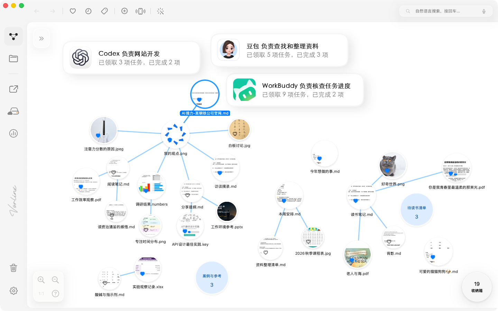
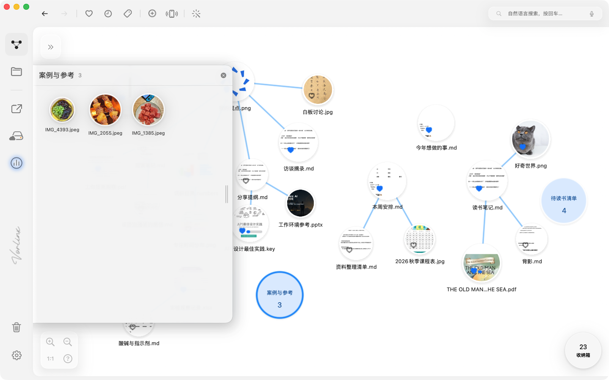
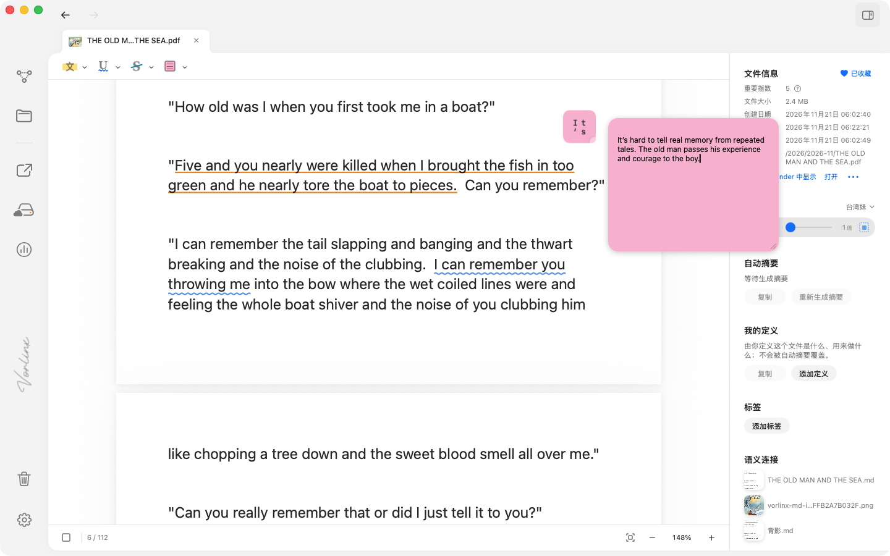
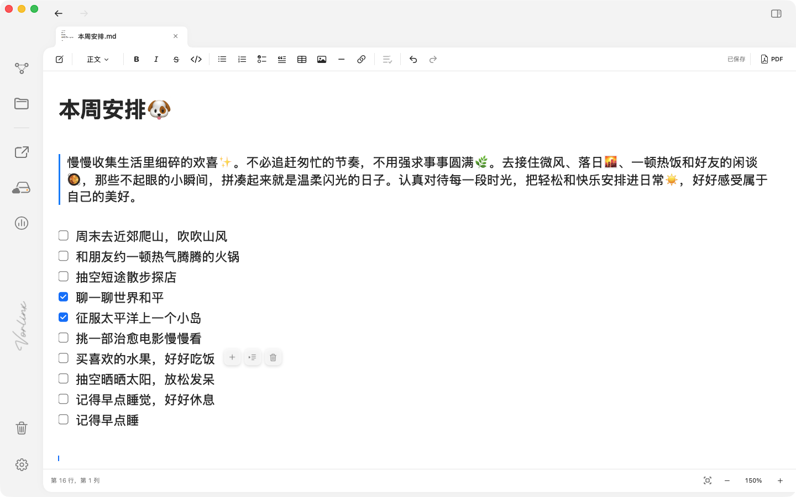
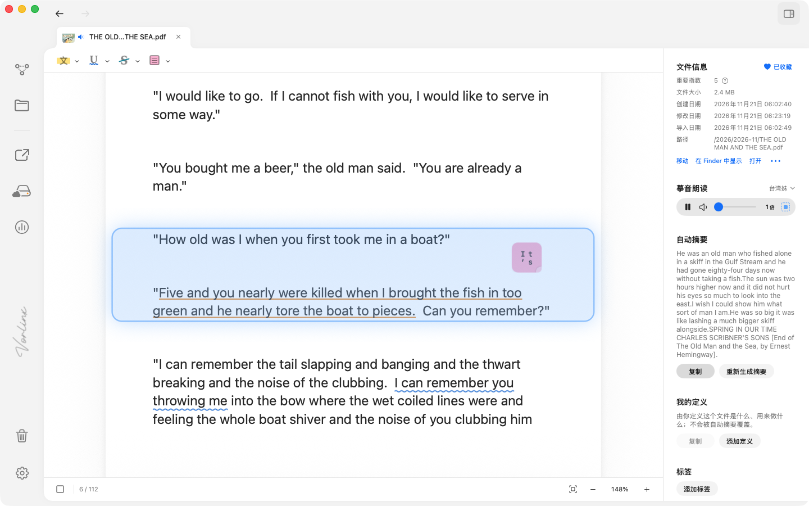
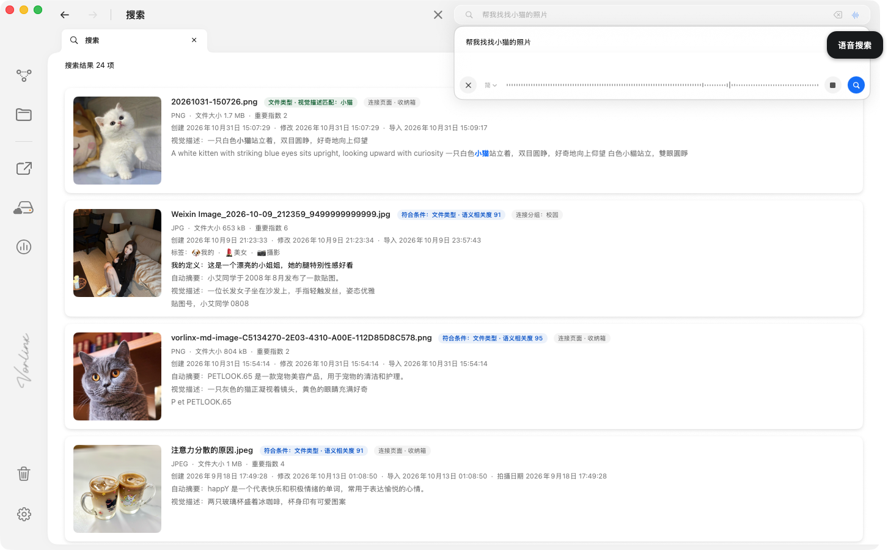
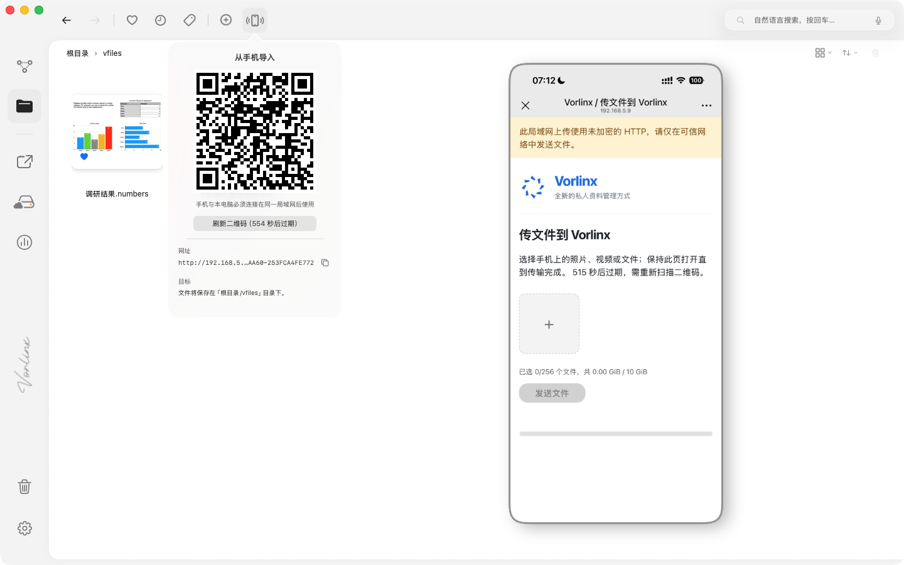
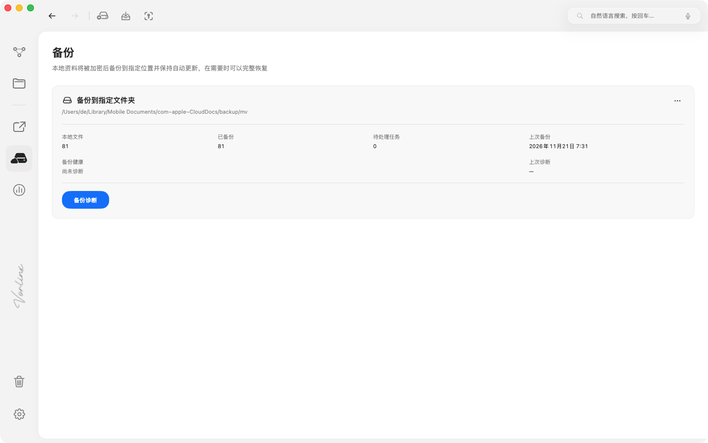

文件一眼看全，
整理随你所想。
将散落的资料放在一张画布上，
自由连接、分组，随时阅读与编辑。
文件与 AI 都在你的设备上，无需上传，离线使用。

想不起文件名？描述你记得的内容，用本地语义搜索找回来。

分组
相关资料，
就在旁边。
把不同文件夹里的资料，按主题放进同一个分组。
需要时展开，继续眼前的思路。

PDF 阅读
读到哪里，
想法就留在哪里。
高亮、下划线、删除线，还有便签。
把重要的段落和自己的理解，一起留下。

Markdown 编辑
写下想法，
也安排好这一周。
编辑笔记，勾选任务，把想法写成自己的内容。
需要分享或留存时，轻松导出 PDF。

本地朗读
让你喜欢的声音，
读给你听。
用一段参考音频，设置熟悉的声音。
朗读 PDF 与 Markdown，跟着高亮，接着上次继续。
自然语言搜索
想不起名字，描述就好。
描述你记得的内容，从本地资料中找回文字、文档和图片。


跨设备导入
手机里的资料，
直接送到电脑。
手机或 Windows 电脑，连接同一局域网。
扫码或打开链接，把文件导入 Vorlinx。

加密备份
安心整理，
也妥善保存。
先加密，再保存。
自动加密备份到你指定的目录。
选择本地目录，或由你已有的同步服务同步的文件夹。
私人的文件，自在的本地空间。
文件、语义索引与 AI 模型都留在设备上。整理、搜索与朗读，无需上传。
模型需提前准备。
局域网访问由你主动开启。